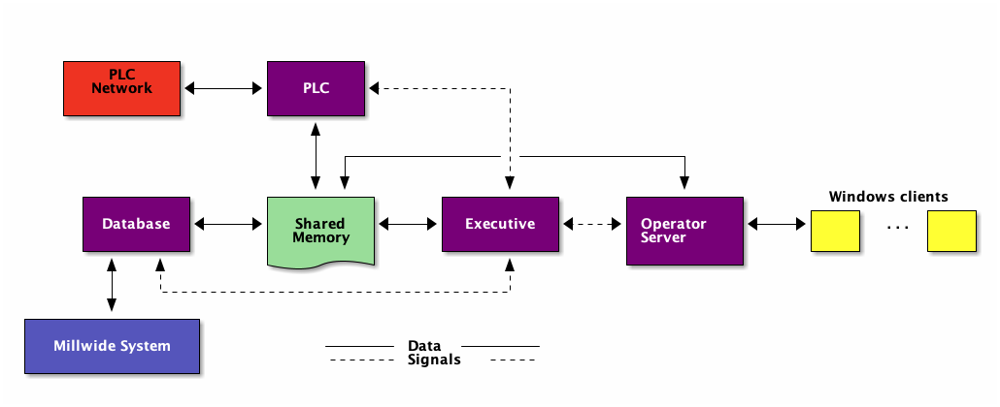
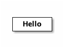

Gestion des notes
(Projet DIU)
Table des matières
- 1. Installation et démarrage du serveur MariaDB
- 2. Connexion au serveur à travers le client
mysql - 3. Création par
rootd'une nouvelle base de données et d'un gestionnaire pour assurer sa gestion - 4. Afficher les utilisateurs
- 5. Gestion de la base de données
- 5.1. Lister les bases de données (auxquelles le gestionnaire a accès)
- 5.2. Se connecter à une base de données
- 5.3. Afficher les tables de la base courante
- 5.4. Afficher la structure de la table
- 5.5. Créer une nouvelle table
- 5.6. Ajouter une colonne à une table
- 5.7. Effacer une colonne
- 5.8. Effacer une table
- 5.9. Afficher le contenu de la table
- 6. SQL avec emacs
- 7. Exécuter un script sql
- 8. Python tkinter table widget for displaying tabular data
- 9. Fonctionnalités et Modèle Conceptuel des Données (MCD)
1 Installation et démarrage du serveur MariaDB
Remarque: Certaines parties concernent plus spécifiquement mon utilisation personnelle avec emacs sous OSX.
1.1 Installer Homebrew
Pour installer MariaDB, il faut disposer de Homebrew (The Missing Package Manager for macOS).
1.2 Installer MariaDB
MariaDB Server peut ensuite être installé grâce à cette commande (à taper dans le Terminal):
brew update brew install mariadb
1.3 Démarrer MariaDB Server
Après installation, on peut (mais on ne va pas le faire) démarrer le serveur avec la commande:
mysql.server start
Il est plus commode d'activer le démarrage automatique du serveur:
brew services start mariadb
1.4 Vérifier que MariaDB a démarré
brew services list
Cette commande doit retourner mariadb started.
2 Connexion au serveur à travers le client mysql
2.1 Client-serveur
Comme la plupart des SGBD ([S]ystème de [G]estion de [B]ase de [D]onnées), MariaDB est basée sur le modèle client-serveur. Cela implique que la base de données se trouve sur un serveur auquel nous n'avons pas accès directement. Il faut passer par un client qui fera la liaison entre nous et le serveur.
Donc, maintenant que MariaDB Server a démarré, on va s'y connecter en utilisant un logiciel client (nommé mysql)… mais sous quelle identité et avec quels droits?
2.2 À la création, la base de donnée est initialisée avec 2 comptes
- Le premier compte correspond au nom d'utilisateur actuel (checké avec la commande
whoami); il ne nécessite pas de mot de passe; - Le second est le compte administrateur
root; il est inaccessible tant qu'on n'a pas défini de mot de passe.
On va donc faire ce qu'il faut pour activer l'accès au compte administrateur (root) puis s'y connecter pour créer une base de données (bd_gestion_des_notes).
2.3 Activer l'accès au compte root
Pour cela, d'abord se connecter au client mysql avec son nom d'utilisateur:
mysql -u $(whoami)
Puis, grâce au commandes du client mysql, définir le mot de passe de root:
SHOW databases; USE mysql; SET password FOR 'root'@'localhost' = password('YOUR_ROOT_PASSWORD_HERE'); FLUSH PRIVILEGES; quit
où YOUR_ROOT_PASSWORD_HERE est à remplacer par le mot de passe souhaité.
3 Création par root d'une nouvelle base de données et d'un gestionnaire pour assurer sa gestion
3.1 Login en tant que root
Maintenant, nous pouvons nous connecter en tant que root:
mysql -u root -p
Il faudra fournir le mot de passe renseigné à l'étape précédente.
3.2 Création de la nouvelle base de données bd_gestion_des_notes:
CREATE DATABASE bd_gestion_des_notes;
SHOW DATABASES;
où:
CREATE DATABASE nom_database;
permet de créer une nouvelle base de données et:
SHOW DATABASES;
permet d'afficher la liste des bases de données.
Si l'on souhaite effacer une base de donnée:
DROP DATABASE nom_database;
3.3 Types d'utilisateurs d'un SGBP
De façon générale, trois types d'utilisateurs ayant chacun des rôles bien distincts sont à distinguer :
- L'administrateur du SGBD et donc des Bases de Données. Il s'appelle
root. Son rôle est d'installer et gérer le SGBD dans sa globalité. Chaque fois que l'administrateur crée une base de données, il délègue sa gestion à un autre utilisateur à qui il donne les droits nécessaires. Remarque: Il ne faut pas travailler sur une bases de données en tant queroot; ce n'est pas son rôle (c'est mal). - Le gestionnaire de Bases de Données (dans un SGBD existant) qui doit connaître sql (Structured Query Language) : création (CREATE TABLE), modification (ALTER TABLE), suppression (DROP TABLE) de tables…
- L'utilisateur final de la base de donnée. Il va interagir avec tout ou partie de la base de donnée à travers une application se voulant conviviale; il n'a pas à connaître sql.
Le SGBD permet de créer différents utilisateurs avec des droits spécifiques, mais il permet aussi de créer différents rôles correspondant à des droits spécifiques ce qui rend la gestion d'utilisateurs ayant des droits identiques plus efficace.
3.4 Création d'un utilisateur gestionnaire
Utilisateur à qui root va donner les droits nécessaires pour créer ou modifier des tables dans la base de données bd_gestion_des_notes ou pour inscrire des utilisateurs.
3.4.1 Méthode 1
On pourrait procéder ainsi:
CREATE USER user_gestionnaire@localhost IDENTIFIED BY 'gestionnaire'; GRANT ALL PRIVILEGES ON bd_gestion_des_notes.* TO user_gestionnaire@localhost; quit
Se connecter au client mysql en tant que gestionnaire
mysql -u user_gestionnaire -p
Saisir le mot de passe précédemment défini.
Mais nous allons plutôt employer la seconde méthode (voir 3.4.2 ).
Mais, en tant que root, commençons par effacer (si besoin) l'utilisateur gestionnaire :
DROP USER user_gestionnaire@localhost;
3.4.2 Méthode 2
- Création du rôle de gestionnaire
CREATE OR replace ROLE role_gestionnaire; GRANT ALL ON bd_gestion_des_notes.* TO role_gestionnaire;
- Si le "stil" et le "proviseur" sont habilités à endosser ce rôle
CREATE OR replace USER stil@localhost IDENTIFIED BY 'stilstil'; GRANT role_gestionnaire TO stil@localhost; SET DEFAULT ROLE role_gestionnaire FOR stil@localhost; CREATE OR replace USER proviseur@localhost IDENTIFIED BY 'propro'; GRANT role_gestionnaire TO proviseur@localhost; SET DEFAULT ROLE role_gestionnaire FOR proviseur@localhost;
- Pour vérifier le rôle de l'utilisateur connecté:
SELECT CURRENT_ROLE();
3.5 Mot de passe et sécurité
Les mots de passe précédents seront à utiliser lors de la première connexion. Ensuite, pour des raisons évidentes de sécurité, les utilisateurs doivent se voir proposer un moyen de changer leur mot de passe.
La commande sql est la suivante:
SET PASSWORD FOR 'proviseur'@'localhost' = PASSWORD('pro');
Mais l'utilisateur final de la BD n'a pas à connaître sql c'est donc à l'application de proposer cette possibilité.
4 Afficher les utilisateurs
4.1 Afficher tous les utilisateurs (en tant qu'administrateur)
Connecté en root saisir la commande:
select host, user from mysql.user;
4.2 Afficher l'utilisateur connecté
Deux commandes possibles pour cela:
SELECT current_user;
ou
SELECT user();
5 Gestion de la base de données
5.1 Lister les bases de données (auxquelles le gestionnaire a accès)
SHOW DATABASES;
5.2 Se connecter à une base de données
Pour utiliser la base de donnée bd_gestion_des_notes:
USE bd_gestion_des_notes;
5.3 Afficher les tables de la base courante
SHOW TABLES;
5.4 Afficher la structure de la table
DESCRIBLE nom_table;
5.5 Créer une nouvelle table
CREATE TABLE nom_table ( nom_colonne1 int, nom_colonne2 VARCHAR(100) );
5.6 Ajouter une colonne à une table
ALTER TABLE nom_table ADD nom_colonne type_colonne;
5.7 Effacer une colonne
ALTER TABLE nom_table DROP COLUMN nom_colonne;
5.8 Effacer une table
DROP nom_table;
5.9 Afficher le contenu de la table
SELECT * FROM nom_table;
6 SQL avec emacs
6.1 Se connecter au client mysql dans emacs
Utiliser la commande: M-x sql-mysql
Renseigner (avec par exemple):
- User:
stil - Password:
stilstil - Database : (ne rien mettre)
- Server:
localhost
6.2 Si emacs ne trouve pas le programme mysql
- Déterminer l'emplacement de
mysqlavec la commande:
which mysql
qui retourne /usr/local/bin/mysql
- modifier
.emacs.d/init.el
(add-to-list 'exec-path "/usr/local/bin")
Emacs recherche les programmes dans les répertoires listés dans la variable exec-path. On a ajouté /usr/local/bin à cette variable.
6.3 Faciliter la connexion
À placer dans .emacs.d/init.el
(use-package sql :ensure t :config (sql-set-product-feature 'mysql :prompt-regexp "^\\(MariaDB\\|MySQL\\) \\[[_a-zA-Z]*\\]> ") (setq sql-user "user_gestionnaire") (setq sql-database "bd_gestion_des_notes") (setq sql-server "localhost") (define-key comint-mode-map [mouse-3] 'comint-insert-input) )
Connexion acilitée, toujours avec la commande M-x sql-mysql et dorénavant il ne reste plus qu'à saisir le mot de passe utilisateur (en l'occurrence: gestionnaire); le reste étant renseigné à l'avance.
6.4 Mots clés automatiquement en majuscule
SQLUP-MODE permet d'écrire les mots clés SQL en majuscule.
Les lignes suivantes sont à placer dans le fichier init.el:
(use-package sqlup-mode :ensure t :config (add-hook 'sql-mode-hook 'sqlup-mode) (add-hook 'sql-interactive-mode-hook 'sqlup-mode) (add-hook 'redis-mode-hook 'sqlup-mode) )
6.5 Autocompletion
;;; SQL COMPLETION ;; put the root password in ~/.emacs.d/lisp/mysql.el (require 'sql-completion) (setq sql-interactive-mode-hook (lambda () (define-key sql-interactive-mode-map "\t" 'comint-dynamic-complete) (sql-mysql-completion-init)))
7 Exécuter un script sql
Il faut déclarer le fichier SQL comme source:
source path_to/the/script_file.sql
Par exemple:
SOURCE ./initdb_gestiondesnotes.SQL
8 Python tkinter table widget for displaying tabular data
8.1 installation
pip install tksheet
8.2 source
9 Fonctionnalités et Modèle Conceptuel des Données (MCD)
Les fonctionnalités attendues sont les suivantes :
9.1 Ajout de discipline ;
Seuls les utilisateurs ayant le statut (= rôle au sens sql) de gestionnaire sont habilités à ajouter des disciplines.
- 1 gestionnaire peut ajouter une ou plusieurs disciplines
- 1 discipline peut être ajoutée par 1 gestionnaire

9.2 Ajout d'enseignants ;
9.3 Ajout d'élèves ;
9.4 Créer les classes chaque année pour chaque niveau ;
9.5 Affecter les notes d'une discipline donnée par un professeur à un élève ;
9.6 Calculer les moyennes et autres statistiques liées aux notes.

